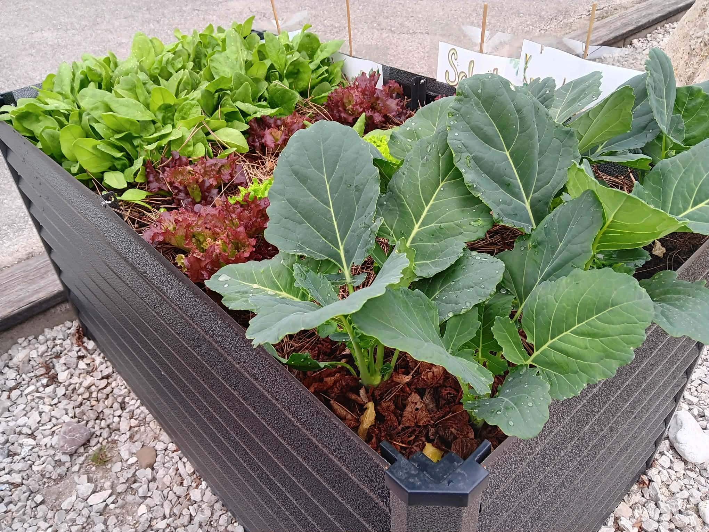
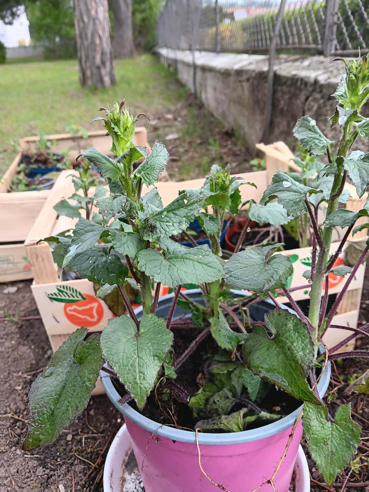
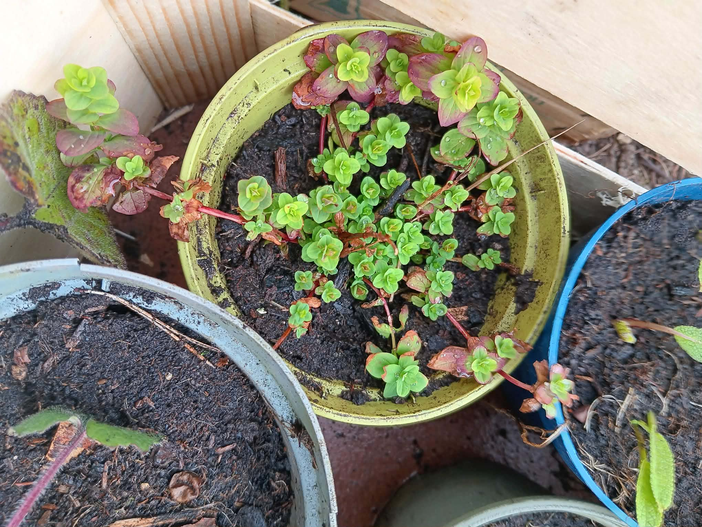
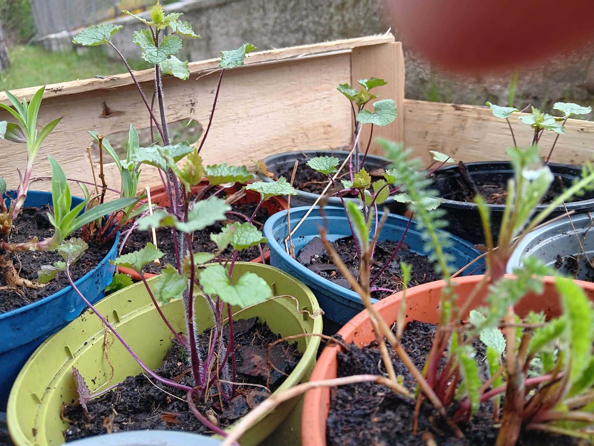
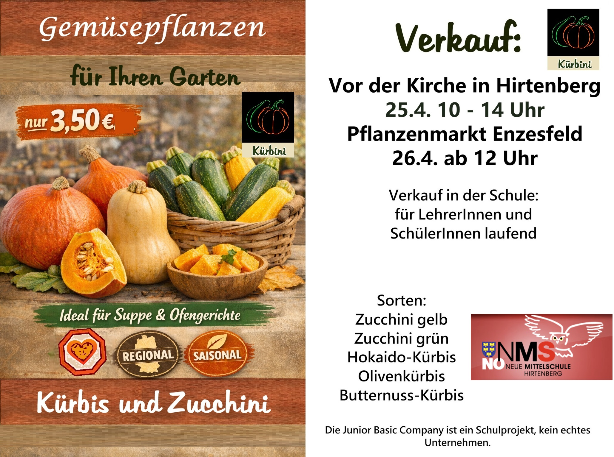

Ob Gemüse im Hochbeet, Kräuterraritäten oder kräftige Jungpflanzen für den Verkauf — bei den Junior Companys Kürbini und TomasTomate lassen die Schülerinnen und Schüler der MS Hirtenberg alles gedeihen. Zu den Markttagen am 25. und 26. April sind alle herzlich eingeladen!
Seit Wochen wird in der Mittelschule Hirtenberg gesät, pikiert, getopft und gegossen. Was als kleines Samenkorn begann, ist inzwischen zu kräftigen Jungpflanzen herangewachsen — liebevoll herangezogen von den Schülerinnen und Schülern selbst. In ihren Junior Companys erleben die Jugendlichen dabei nicht nur, wie aus einem Setzling eine Pflanze wird, sondern auch, was es heißt, ein eigenes kleines Unternehmen zu führen: vom Anbau über die Kalkulation bis hin zur Werbung und zum Verkauf.
Zwei Junior Companys, ein gemeinsames Ziel
Hinter dem Projekt stehen zwei Schüler-Unternehmen mit ganz eigenem Charakter. TomasTomate kümmert sich um Kräuterraritäten, Gemüse und Bienenweidepflanzen — ideal für alle, die ihren Garten oder Balkon naturnah und bienenfreundlich gestalten möchten. Kürbini hat sich ganz dem Kürbis und der Zucchini verschrieben und bietet robuste Jungpflanzen für die eigene Ernte im Spätsommer und Herbst an.
Allen gemeinsam ist ein einfacher, aber überzeugender Gedanke: gesunde, regionale und saisonale Pflanzen aus der Region für die Region. Wer Gemüse, Kräuter oder Bienenweidepflanzen für den eigenen Garten sucht, wird bei den Markttagen garantiert fündig.




Kürbini: Kürbis und Zucchini für Ihren Garten
Das Sortiment von Kürbini reicht von der knackigen Zucchini bis zum lagerfähigen Speisekürbis — perfekt für Suppe, Ofengerichte oder einfach zum Selber-Weiterziehen im eigenen Beet. Eine Pflanze kostet nur 3,50 €.

Die Markttage im Überblick
Wann & wo verkauft wird
- 25. April 10 – 14 Uhr · vor der Kirche in Hirtenberg
- 26. April ab 12 Uhr · Pflanzenmarkt vor der Spitalskirche in Enzesfeld
Zusätzlich gibt es einen laufenden Verkauf in der Schule für Lehrerinnen, Lehrer sowie Schülerinnen und Schüler.
Mehr als nur ein Verkaufsstand
Hinter den Markttagen steckt weit mehr als ein paar Töpfe mit Jungpflanzen. Die Schülerinnen und Schüler übernehmen vom ersten Setzling bis zum fertigen Verkaufsstand selbst Verantwortung — sie planen, rechnen, gestalten Plakate und treten mit ihren Kundinnen und Kunden in Kontakt. So wird wirtschaftliches Denken nicht im Lehrbuch, sondern direkt im echten Leben erfahrbar.
„Die Kinder lernen hier ganz nebenbei, was es heißt, eine Idee in die Tat umzusetzen — vom Samenkorn bis zum verkauften Produkt."
Schauen Sie vorbei, unterstützen Sie unsere jungen Unternehmerinnen und Unternehmer und holen Sie sich ein Stück Frühling für den eigenen Garten. Wir freuen uns auf Ihren Besuch!
Hinweis: Die Junior Basic Company ist ein Schulprojekt und kein echtes Unternehmen.